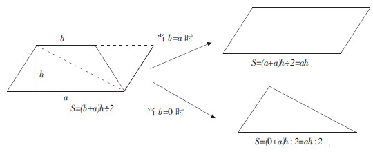
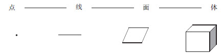
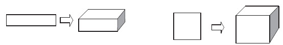
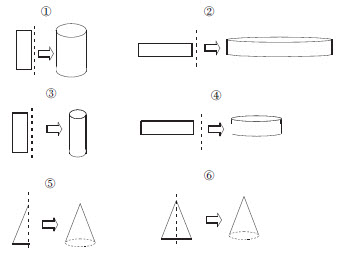
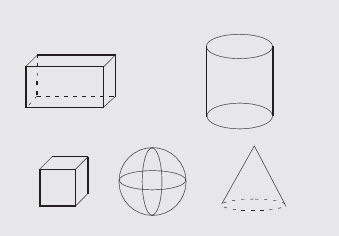
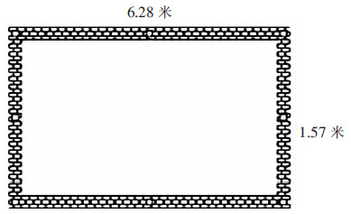
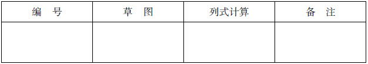

李惠珍
孔子说的“温故而知新”，可以理解为将复习视为获得新知的又一次学习，那么，该怎样带着学生在复习中获得新知呢？我认为，除了复习的组织要有新意、有新的乐趣外，还要在原有知识的基础上寻找新的切入点，变换角度和程序，尽量在课堂伊始就能吸引住学生，抓住学生的注意力，启动学生的数学思考。有效的数学复习课应该是以学生为主体的，通过学生的自主探究、合作交流，不仅能让学生巩固已学知识、查漏补缺，整体把握知识脉络，还可以提高学生应用数学知识解决实际问题的能力，培养学生更好的数学思维品质。
以问题为线索，让学生通过对问题的思考，挖掘和沟通知识点之间的内在联系，学会用联系、发展的观点研究数学问题，促进知识的同化和迁移，从而建构新的、良好的认知结构。一个单元结束后，引导学生对这一单元的知识进行交流梳理。例如，多边形面积计算这一单元教学后，可以引导学生带着以下几个问题进行反思：
（1）本单元学习了哪几种多边形？这些多边形的面积应该怎样计算？请同学们回忆一下这些公式是怎样推导出来的，也可以动手操作。
（2）运用课件演示多边形面积的推导过程，再现表象，加深理解。
1）多边形面积公式是采用什么方法推导出来的？（采用剪拼、合拼的方法把未知转化成已知）。
2）比较多边形面积计算的相同点和不同点。
①相同点：三角形和梯形的面积公式要除以2。
②不同点：三个图形的面积计算公式都与a、h有关，那么它们三者一定有联系，如下图所整理，梯形、平行四边形、三角形之间的联系，请看课件演示。

当梯形的上底b等于下底a时，梯形就变成了平行四边形；当梯形的上底b等于0时，梯形就变成了三角形。回忆表象、动手操作、课件的演示等，都有利于帮助学生清晰地认识这些平面图形的变化过程、计算公式的推导转化过程、图形和公式之间的内在联系，有利于使学生更好地理解公式和应用公式，进一步加深对这些图形计算方法的理解，从而增强空间观念。
创设有效的操作活动情境，可以让学生在操作活动的过程中体会“点、线、面、体”之间的关系，深刻理解知识的发生发展演变过程，使学生知其然更知其所以然。当然，这里所说的情境不一定必须是生活的情境，也可以是纯数学化的活动情境。例如，教师可以出示一个点，由众多的点引出线，按照点——线——面——体的线索，把知识串联沟通，让学生在操作活动中体会到“点动成线，线动成面，面动成体”这样一种动态生成的关系。
关于从“点”到“面”的活动：
（1）点一点。按一定的顺序点出许多点，你看到了什么？
（2）画一画。按一定的顺序排列着画出许多横线，你看到了什么？
（3）想一想。许多张长方形、正方形的纸叠起来会形成什么？
（学生操作后汇报，课件播放）

由平面图形到立体图形，是学生空间观念的一次发展和飞跃。本设计通过“点一点”、“画一画”、“想一想”等探究性活动，使学生亲历和感受二维与三维图形的相互转换过程。在操作过程中通过自主探索进一步掌握图形性质，在由“点”到“面”、由“面”再到“体”的变化中，使学生清晰地看到几何知识的形成和发展过程，沟通了它们之间的内在联系，并从中积累了数学活动的经验，发展了空间观念和推理能力。这样的设计将抽象的、呈现方式单一的教学内容变得生动有趣、充满想象，更有利于激发学生复习知识的积极性，提高复习课的效益。其实质就是将知识条理化、系统化的思维过程。
美国著名数学教育家波利亚说：“一个专心的、认真备课的教师能够拿出一个有意义的但又不复杂的题目，去帮助学生挖掘问题的各个方面，使得通过这道题，就好像通过一道门户，把学生引入一个完整的理论领域。”在复习时应科学地安排典型例题或练习题，通过典型题的探索提高学生解决问题的能力。例如，针对易混易错的内容，设计多种概念混合在一起的判断题，如下：
选择正确答案的序号填在括号里。
⑴侧面积⑵底面积⑶体积⑷容积⑸表面积
①求一只铁皮桶能装水多少升是求水桶的（ ）。
②做一只油桶需要多少铁皮是求油桶的（ ）。
③这只油桶占地多少，是求油桶的（ ）。
④求一个圆柱形钢条的重量，应先求它的（ ）。
⑤冬天护林工人给圆柱形的树干的下端涂防蛀涂料，那么粉刷树干的面积是指（ ）。
在作出选择之前，学生必须对已经学过的易混概念进行认真的分析、比较、筛选，最后才能作出正确的判断，做题思考的过程使学生的思维得到训练。
还可以设计一题多解的开放题，训练学生的思维，提高学生运用知识解决实际问题的能力。例如：“一个广场前的花坛是由一个正方形和两个等腰三角形拼成的梯形，已知正方形的边长是5米，求这个梯形花坛的面积。”对于这一题，学生想到了很多方法来解答：（1）可以运用梯形的面积公式来解决，梯形的上底是5米、下底是15米、高是5米；（2）可以将这个梯形转化成2个边长是5米的正方形求面积；（3）可以转化成长是10米、宽是5米的长方形求面积；（4）可以转化成底是10米、高是5米的平行四边形求面积；（5）可以转化成4个底是5米、高是5米的等腰直角三角形求面积；（6）还可以转化成1个底是10米、高是10米的三角形来求面积。在解答这一组合图形面积的过程中，可以综合运用所有多边形面积的计算公式，既训练了学生的思维，又提高了学生综合解决问题的能力。
课堂智慧
让复习课绽放新风采
——北师大六年级“立体图形的复习”教学案例
立体图形这部分知识的基本概念较多，而且易混易错。传统教材又忽略了让学生亲历平面图形与空间几何体转换的动态发展过程，学生的空间观念难以形成，运用这部分知识解决实际问题的能力还有待进一步培养。本课从学生学习实际出发，通过叠、转、圈、围等实践活动，让学生复习梳理知识、运用知识，强化学生的探究经历，促进学生对知识的自主建构。
通过创设情境，动手实践，体验平面图形与立体几何体的动态发展过程，发展学生的空间观念。
将多张长方形、正方形的纸叠起来会形成什么形体？

师：同学们请看，这是一个长方形，如果把许多这样的长方形或正方形重叠起来，大家想象一下，可能形成什么图形？
生：（想象，回答）长方体。（课件缓慢播放由长方形纸张叠成一个长方体）
师：这张长方形的纸张，如果绕着它的一条边旋转一周，也就是旋转360°，想象一下，会是什么图形？
生：圆柱体。
师：现在，请同学们用你们课桌上的数学书或本子当成长方形的纸转一转，看你能转出几种不同形状的圆柱体。
（学生动手操作）
师：边转边说，你们转成的圆柱体的底面半径和高分别是长方形的哪一条边？
师：活动完的同学请坐好，请一个同学跟大家分享一下，彬彬同学，你来说说。
生：我是这样转的，转成的是一个……（边说边演示）
师：你是以哪条边为轴？
生：我是以长方形的长边为轴，转出来的是一个直圆柱。
师：你转出来的直圆柱的底面半径和高分别是长方形的哪一条边？
生：圆柱的底面半径是长方形的宽，圆柱的高是长方形的长。
师：同学们，你们是不是也是这样转的？
生：如果……
师：还想说，是吗？
生：如果是以长方形的宽为轴，旋转360°，也可以得到一个圆柱体。
师：这个圆柱体和刚才的那个相比较有什么不同？
生：比较矮，比较胖。
师：你能说一说这个圆柱体的底面半径和高是长方形的哪一条边吗？
生：这个圆柱体的底面半径是长方形的长，高是长方形的宽。
师：你们同意他的意见吗？谢谢！
师：同学们还有其他的发现和意见吗？
生：我有，我是这样转的。
师：请上来展示。
生：我以这条线为轴……
师：同学们，这条线是长方形的什么？
生：是以长方形长边的对称轴为轴，这样转。
师：你能说说你转成的圆柱体的底面半径和高分别是长方形的什么吗？
生：我转的圆柱体的底面半径是长方形的宽边的一半，高是长方形的长。
生：我还有，我是这样转的，以长方形的宽的对称轴为轴。
师：很好，你也上来展示一下并跟大家说说。
生：我转成的圆柱体的底面半径是长方形的长边的一半，高是长方形的宽。

师：同学们请看大屏幕。（课件出示长方形旋转后形成的圆柱体）（验证同学们的操作、观察、思考的结果）
师：请同学们注意看，这是一个什么图形？
生：（异口同声）圆锥体。
师：同学们想象一下，它是由什么图形旋转而成的？
生：三角形。
师：是不是所有的三角形通过旋转都能得到圆锥体呢？
生：（思考片刻）不是的，应该是直角三角形。
（教师出示课件验证）
师：谁能说说圆锥的底面半径和高是三角形的哪些边？
生：圆锥的底面半径和高分别是三角形的两条直角边。
师：说得很对。
生：老师，我觉得等腰三角形也可以转出圆锥体。
师：很好，以等腰三角形的对称轴为轴，旋转180°，也可以转出一个圆锥体。
师：你能来说一说吗？
生：圆锥的底面半径是等腰三角形底边的一半，高是等腰三角形底边上的高。
师：请同学们看屏幕，这是什么形体？
生：球体。
师：你们知道它是由什么平面图形旋转而得到的吗？
生：圆形。
师：是的，请看大屏幕。

师：屏幕上的这些立体图形都是由平面图形转化而来的。这节课我们就一起来复习有关立体图形的知识，并解决一些实际问题。
师：请同学们回忆一下，我们都学习了哪些立体图形的知识？
（生思考）
师：我们学过的有关立体图形的知识还是挺多的，你们打算用怎样的形式来回答呢？
生：小组派代表、开火车。
师：这样吧，先用开火车的形式，但是，前面的同学回答过的问题，后面的同学不能重复。
生：正方体的体积=棱长×棱长×棱长
字母公式是：V=a×a×a
生：长方体的体积公式=长×宽×高
字母公式是：V=abh
生：圆柱的体积等于底面积乘以高。
生：圆柱的表面积等于侧面积加底面积乘以2。
生：圆锥的体积等于底面积乘以高乘以1/3。
生：长方体的表面积=（ab＋ah＋bh）×2。
生：正方体的表面积=6a×a。
生：长方体的棱长总和=（a＋b＋h）×4。
生：正方体的棱长总和=12a。
生：长方体、正方体、圆柱体都可以用底面积乘以高。
师：对这个同学的回答，还有没有要补充的？谁来？
生：求长方体、正方体、圆柱体的体积都可以用底面积乘以高来计算。
师：下面采用先在小组内，再派代表的形式来交流。
（各小组交流、梳理本单元知识）
师：刚才同学们交流的就是小学阶段学习的立体图形的基础知识，要求圆柱体的表面积，就是用侧面积加上底面积，要求直圆柱的体积，就是用圆柱的底面积乘以高。
师：下面请同学们回忆一下，我们平时学习时有没有好的解决问题的方法或者在解决问题时遇到难题、容易出错的经验教训，拿出来和大家分享一下。
生：我求圆锥的体积时经常忘了乘以1/3。
生：求无盖的水桶所用的材料时求一个盖加上一个底面积。
生：求粉刷房子的墙壁的面积时，要扣去门窗和地板。
师：实际是求5个面的面积再扣去门窗的面积。
生：求压路机压过的面积和求粉刷柱子的面积，都是只求侧面积，不能算成表面积。
生：不管是求圆柱的表面积还是体积，都要先确定它们的底面半径。
生：注意题目出现的单位是否对应。
师：就是要认真审题。在解决有关主体图形时要注意以下三点：①题目告诉你是什么形体，②求什么，③单位是否统一、对应。
师：刚才同学们热烈交流了平时在解决问题过程中易混易错的知识点。下面这几道判断题同学们认真看，并作出正确判断。
选择正确答案的序号填在括号里。
（1）侧面积（2）底面积（3）体积（4）容积（5）表面积
①求一只铁皮桶能装水多少升是求水桶的（ ）。
②做一只油桶需要多少铁皮是求油桶的（ ）。
③这只油桶占地多少，是求油桶的（ ）。
④求一个圆柱形钢条的重量，应先求它的（ ）。
⑤冬天护林工人给圆柱形的树干的下端涂防蛀涂料，那么粉刷树干的面积是指（ ）。
师：请同学们认真审题后逐题作出判断，老师发出口令时，同学们用手比出序号。
一个农民收获8立方米的稻谷，他想用一块长6.28米、宽1.57米的长方形竹席，在院子里围一个简易粮囤装这些稻谷。请你帮他设计几种围法，怎样围才能装得下这些稻谷？

1.审题。
2.让学生选择适合自己的学习方法或独立研究或小组学习，小组合作学习应注意什么？（分工明确，讨论时不影响他人学习）
3.合作探索，填写报告单。

小组合作探究报告单：
编号草图列式计算备注4.汇报交流。由小组派代表把报告放在实物投影仪上投放，学生汇报自己小组的研究方案，必须讲清楚解题的策略。
师：同学们，哪一组愿意汇报你们的研究思路？
生：我们组是以长方形的长边为圆柱的底面周长，直接围一个圆柱体。
生：我们组是靠着墙角围一个扇形。
生：我们组是靠着墙围一个半圆柱体。
生：我们组是以长方形的宽边为底面周长，围一个圆柱体。
师：还有其他想法吗？
生：我们是靠着墙角围一个正方体。
师：可以吗？要考虑所给的材料是竹席，围成正方体必定有直角，竹席会断，稻谷会漏出来的。
师：同学们，你们各组都有不同的思考，这样很好。现在请拿出计算器，在报告单上列出算式算一算。算完再上来展示。